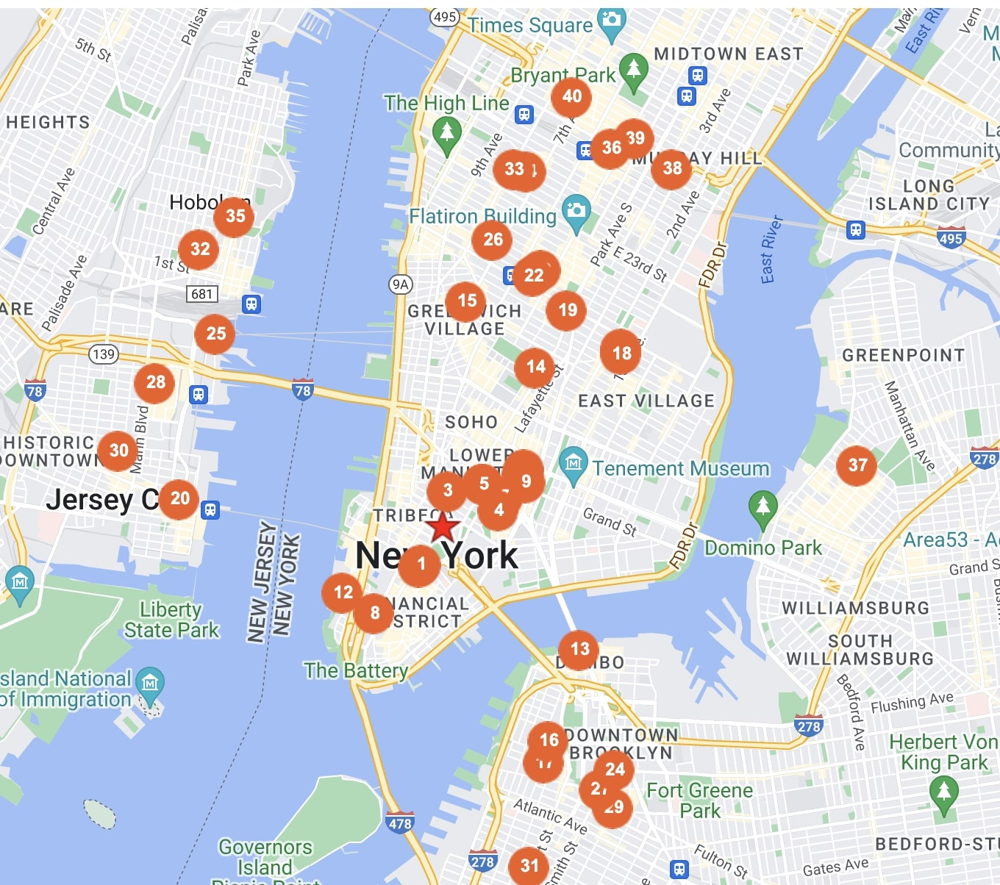
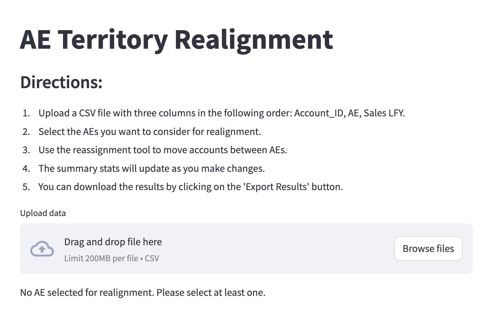

Store Locator Web Scraper

Web scraper that aggregates and standardizes store locator data using string matching techniques
Technologies: Python, BeautifulSoup, Fuzzywuzzy
Walmart Proximity Analysis

Explores the proximity of the US population to all Walmart locations, integrating geospatial and statistical analysis
Technologies: Python, Tableau, GeoPy, BeautifulSoup
Territory Realignment Tool

Streamlit-based web app tool to realign sales territories and export newly-created territories as an excel file
Technologies: Python, Streamlit, Pandas